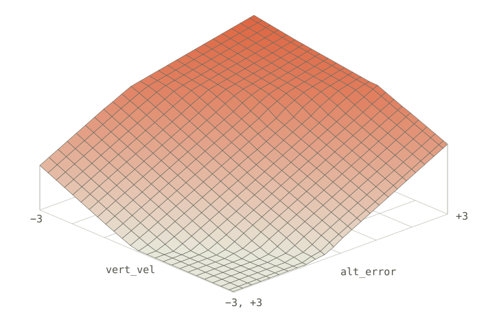

Neural network
decompiler.
Turn a bounded ONNX network into a program you can read. Trace its decisions in C99, Rust or Python, then replay the verification with Z3.
Inspect the drone model Install locallyAltitude controller
Output surface
battery_v = 11.55Trace an input
Follow a sample through the saved controller.
- Region
- R8
- Program
- 0.533728
- Network
- 0.533604
Fixed vertical velocity +0.0638 · 48 recorded samples
Read generated C99 R8
out_values[0] = ((((0.17919503764774455 * alt_error) - (0.14619990945821282 * vert_vel)) - (0.051098190143886439 * battery_v)) + 1.121805866212239);Verification ledger
Select a run to inspect its generated source, input space and certificate.
| Model | Task | Regions | Agreement | Result |
|---|---|---|---|---|
| Drone altitude | Regression | 9 | 100.00% | Global proof |
| CartPole | Classification | 3 | 99.98% | Counterexample |
| Reactor safety guard | Classification | 30 | 92.86% | Counterexample |
| Nonlinear actuator | Regression | 12 | 99.67% | Counterexample |
Agreement uses sampled inputs. The drone proof bounds absolute error by 0.05 in real arithmetic over the declared domain.
Replay a proof locally
With Python 3.11 or later in a virtual environment, check the bundled drone controller against its certificate.
Shell
git clone https://github.com/Dafenxz0/glassbox.git
cd glassbox
python -m pip install -e .
glassbox verify bundles/drone_altitude_pid.gbundle --timeout 30